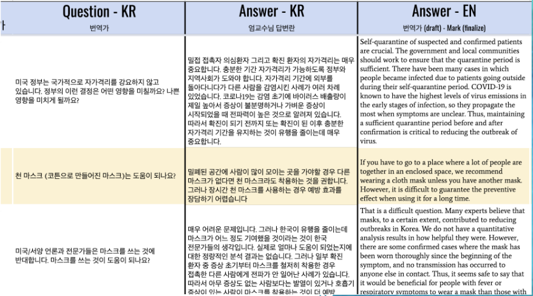
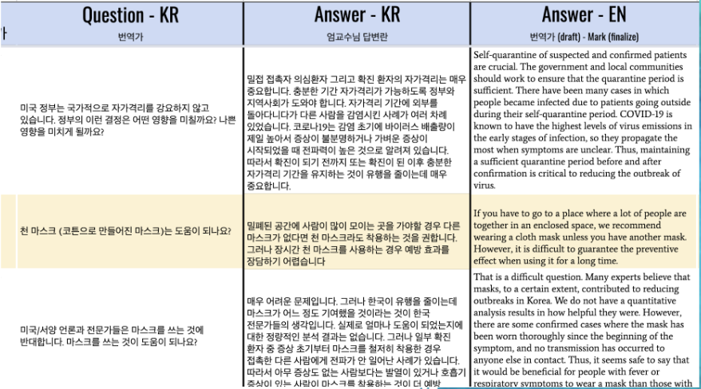

Covid-19 First Responders International Outreach Sessions
For two Q&A sessions held on Reddit’s
r/coronavirus, I did simultaneous text translation for
South Korea’s pandemic response leaders, Dr. Joong Sik Eom
and Drs. Unsun Chung & Poke-kee Min.
 

Florianópolis (Brazil) Metropolitan COVID-19 Pandemic
Response
At the request of Matheus Pacheco de Andrade MD, lead
coordinator for the Florianópolis city pandemic response,
I coordinated a team of four students to translate Korean
CDC publications to English.
We translated “COVID -19 Prevention & Management for
Hospitals” (URL), a 76-page document, in less than one week.
I then delivered an English translation of the KCDC publication
“COVID-19 Response Guideline for Local Governments” (URL).